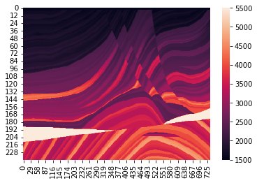

Basic Information

Chinese Name: 刘 佳禾
English Name: Jiahe Liu (Kevin)
Current Major: Electrical Engineering
Previous Major: Physics
Low-Frequency Seismic Wave Extrapolation with Modified U-Net

Project Description:
In this project, a method for low-frequency seismic wave extrapolation based on a modified U-Net is proposed.
Based on U-Net, the neural network is deepened and improved by adding residual blocks and a deep supervision
structure. The artificial seismic records obtained from the forward modeling of seismic wave field of the
Marmousi velocity model and sub models with PML are used as the source of the training datasets. Taking the
high-frequency data as samples and the low-frequency data as labels, the obtained final model's performance
is marked by the average peak signal-to-noise ratio reaching up to 29.86dB for the test set.